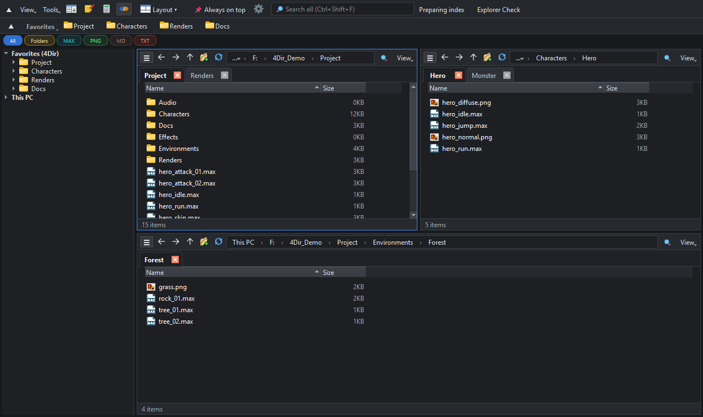

Wielopanelowy menedżer plików szybszy niż Eksplorator plików Windows!!
Bez instalacji — rozpakuj i uruchom.
⬇ Pobierz 4Dir v0.9.159⊞ Pobierz ze sklepu Microsoft Store
Windows 10/11 64-bitowy · 92 MB · 2026-11-29 · za darmo · 🌐 Obsługiwane języki 26
⭐ Podoba Ci się 4Dir? Zostaw gwiazdkę na GitHubie.
⭐ Gwiazdka na GitHubieWesprzyj 4Dir
4Dir jest darmowy i bez reklam.
Jeśli oszczędza Ci czas, drobna darowizna pomaga utrzymać aktualizacje.
- Woojin Jeong
Antywirus lub komputer służbowy blokuje plik zip? Pobierz zamiast tego wersję ze sklepu, podpisaną przez Microsoft (integracja z Win+E nie jest tam dostępna).
⚠ Niektóre programy antywirusowe (Microsoft Defender, HP Wolf Security itp.) błędnie oznaczają plik 4Dir.exe w archiwum zip jako złośliwe oprogramowanie. To fałszywy alarm.
4Dir.exe to 18-kilobajtowy program startowy, który tylko uruchamia aplikację (źródło), i został zgłoszony producentom.
Bitdefender potwierdził, że plik jest czysty; wykrycie zostanie usunięte w kolejnych aktualizacjach.
Jeśli jest blokowany, użyj wersji ze sklepu.
⬇ Pobieranie rozpoczęte
4Dir jest darmowy i zawsze taki będzie. Jeśli Ci pomaga, drobna darowizna pozwala utrzymać aktualizacje.
Nowości w v0.9.159
- Moje menu: tylko ikona (pusta nazwa nie pokazuje już „?”), własna ikona (.ico, .png, .exe…) i separatory.
- Strona jest teraz we wszystkich 26 językach aplikacji; instrukcja ma 7 nowych tematów (Start, panel jako podgląd, podgląd folderu, kolumny, Moje menu, kolory plików, tryb lekki).

Funkcje
Do 20 paneli
Układy z 1, 2, 3, 4 lub 6 panelami jednym kliknięciem albo dowolna siatka do 5 × 4. Każdy panel ma własne karty.
Nie przeszkadza
Foldery są odczytywane bezpośrednio, bez ciężkiego widoku powłoki Windows. Brak liczników czasu i odpytywania w stanie bezczynności — można go bezpiecznie trzymać otwartego obok 3ds Max, gier czy innych wymagających aplikacji.
Natychmiastowe wyszukiwanie
Wpisz tekst, aby przeszukać nazwy wszystkich plików na dyskach. Własny indeks aktualizuje się na bieżąco — bez uprawnień administratora.
Status SVN na pierwszy rzut oka
Znaczniki zmodyfikowany / dodany / konflikt odczytywane prosto z .svn — foldery robią się czerwone, gdy coś w środku się zmieni. Git i Perforce przez nakładki Windows.
Jak Eksplorator
Te same skróty klawiszowe, pełne menu kontekstowe Windows, przeciąganie i upuszczanie do i z Eksploratora oraz innych aplikacji. Kliknij prawym przyciskiem obraz .webp, aby zapisać go jako PNG lub JPG.
Przenośny i prywatny
Ustawienia zostają w folderze 4Dir. Jasny/ciemny motyw, 26 języków, zbiorcza zmiana nazw, przywracanie sesji i wbudowana kontrola kondycji Eksploratora.

Jak zainstalować
- Pobierz plik zip przyciskiem powyżej (lub z GitHub Releases). Zielony przycisk „Code → Download ZIP” na GitHubie zawiera tylko kod źródłowy i nie uruchomi się.
- Kliknij zip prawym przyciskiem → Właściwości → zaznacz Odblokuj → OK. (W przeciwnym razie Windows będzie za każdym razem pokazywać ostrzeżenie bezpieczeństwa.)
- Wypakuj go gdziekolwiek i kliknij dwukrotnie 4Dir.exe. (lub 4Dir.vbs, jeśli 4Dir.exe jest zablokowany)
Jeśli pojawi się Windows SmartScreen: kliknij Więcej informacji → Uruchom mimo to.
Sprawdź pobrany plik (opcjonalnie)
W Wierszu polecenia uruchom certutil -hashfile 4Dir_v0.9.159.zip SHA256 — wynik musi się zgadzać:
f6855a65675fb1187fb6c6e7212f20340ce176cb5bcc5485d586797c72f04af1
FAQ
Czy naprawdę jest darmowy?
Tak. 4Dir jest darmowy i open source (GPL-3.0). Bez reklam, bez konta, bez wersji próbnej.
Czy mogę używać go w pracy?
Tak. 4Dir to wolne oprogramowanie na licencji GPL-3.0, więc firmy też mogą z niego korzystać za darmo, bez opłat licencyjnych i rejestracji. Ponieważ działa bez instalacji, upewnij się tylko, że Twoja firma zezwala na aplikacje przenośne.
Czy naprawdę jest szybszy niż Eksplorator plików?
Otwarcie folderu z 1000 plików w nowym oknie zajęło w 4Dir 0,4 s, a w Eksploratorze plików około 2 s. Otwarcie kolejnego okna zwiększyło zużycie pamięci o około 10 MB w 4Dir i około 130 MB w Eksploratorze plików. Zmierzono po 5 razy na tym samym komputerze (Windows 11, SSD). Przy dziesiątkach tysięcy plików w jednym folderze różnica się zmniejsza.
Czy wysyła jakieś dane?
Żadnych danych osobowych. Raz dziennie sprawdza tylko, czy jest nowa wersja (możesz to wyłączyć w menu Narzędzia).
Coś poszło nie tak?
Narzędzia → Zapisz dziennik do zgłoszenia problemu, a potem kliknij „Wyślij e-mailem” (albo wyślij zip na support@4dir.net). Użytkownicy GitHuba mogą też otworzyć zgłoszenie (issue).